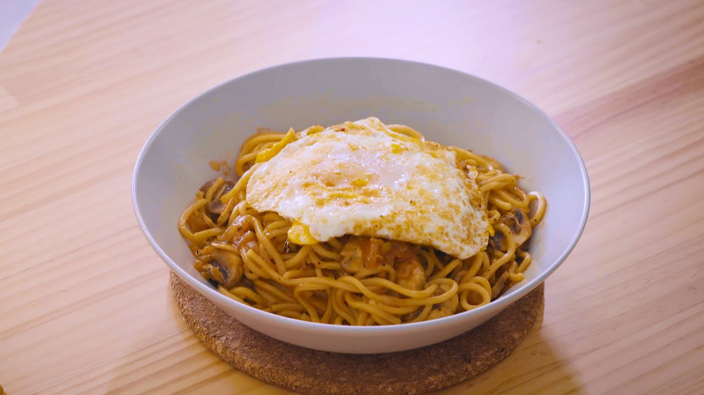
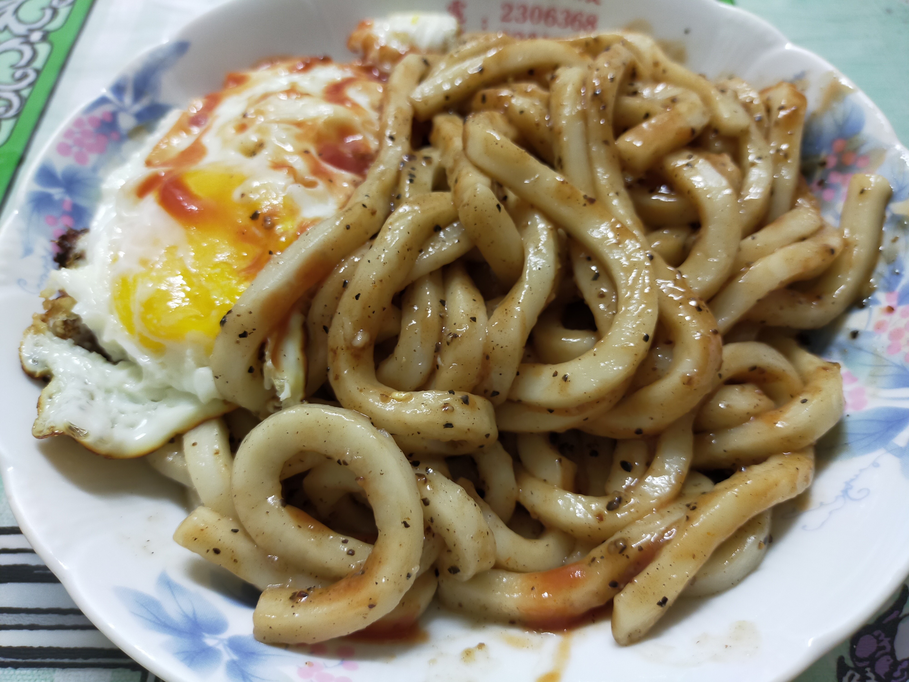
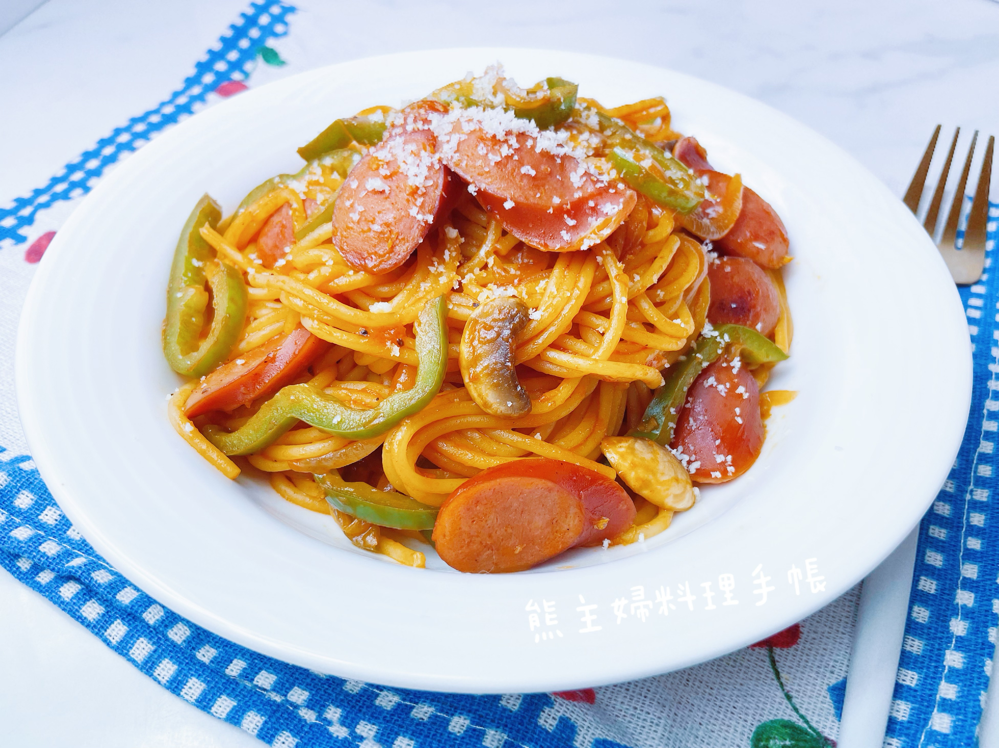
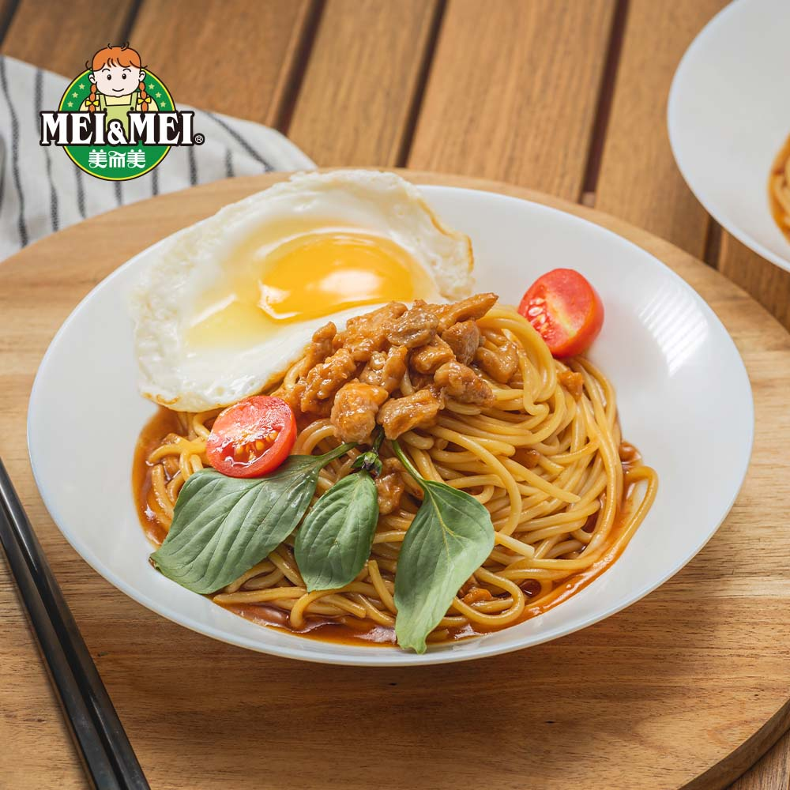
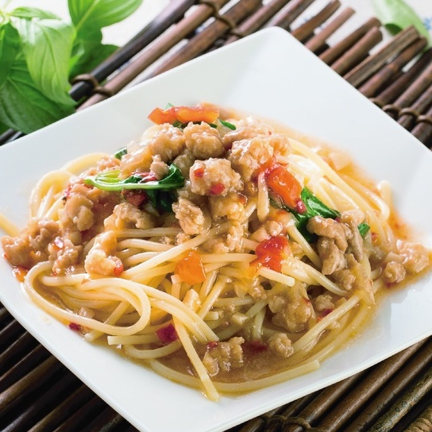
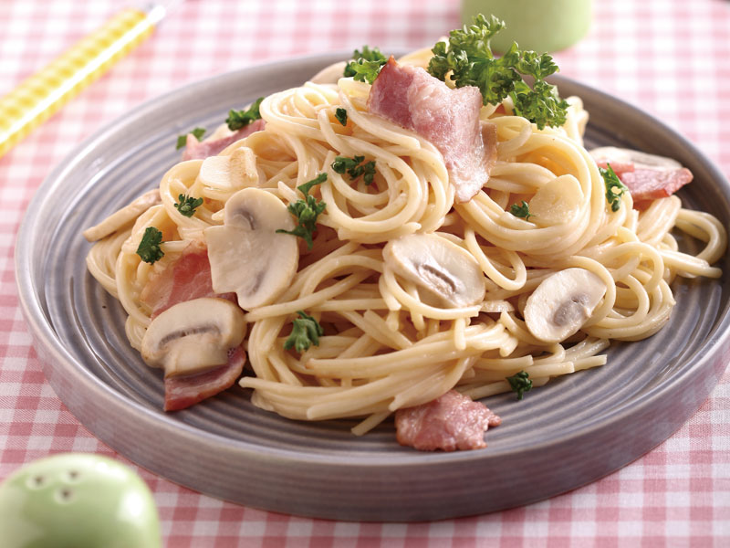
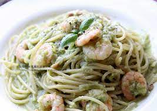

鐵板麵

蘑菇麵
可能有濃郁的蘑菇風味，口感上可能會有蘑菇的嫩滑感，搭配湯汁或醬料使整體味道更豐富。

黑胡椒麵
可能帶有濃郁的黑胡椒香氣，口感上可能會有一些辛辣和香料的刺激感，同時搭配嫩滑的麵條。

義大利麵
可能是一種多樣化的麵食，口感取決於配料和醬汁。可能有彈牙的麵條，搭配濃郁的番茄醬或其他義大利風味的醬料。

海南雞丁麵
可能有清淡的雞湯風味，海南雞丁的口感可能是鮮嫩多汁的，整體味道可能清爽可口。

打拋豬麵
可能有炒麵的風格，打拋豬可能帶有香脆的外皮，搭配蔬菜和醬料，口感可能豐富多樣。

奶油培根麵
可能有濃郁的奶油和培根香氣，口感上可能會有奶油的滑順感，培根則帶有咸香口感。

青醬海鮮麵
可能有新鮮的海鮮風味，青醬可能帶有香草和大蒜的香氣，整體口感可能清新且多層次。